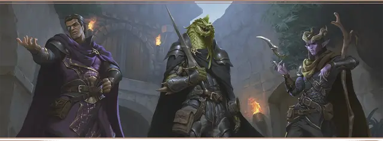

Наёмник Жентарима
Zhentarim Mercenary

Характеристики Сила, Ловкость, Харизма
Черта Бандит Жентарима
Навыки Восприятие, Запугивание
Инструменты Набор для фальсификации
Снаряжение Выберите А или Б: (А) Дубинка, Кинжал, Набор для фальсификации, Отличная одежда, Направленный фонарь, 3 фляги Масла, 2 Кошеля, Леска, Трутница и 11 ЗМ; или (Б) 50 ЗМ
Может быть, вам нужны были деньги. Может быть, вы хотели почувствовать себя в составе семьи, пусть даже настолько сомнительной. Может быть, вы просто хороши в выполнении задачи любыми средствами. Так или иначе, вы вступили в Жентарим, печально известную гильдию наёмников, "работающую" по всем Забытым Королевствам. Хотя лидеры Жентарима заявляют, что гильдия — скорее семья, чем теневой синдикат, мало в какой семье можно найти столько обмана, кумовства и взяточничества. Продвигаясь по иерархии Жентарима, вы отточили хитрость, скорость — и свой клинок.